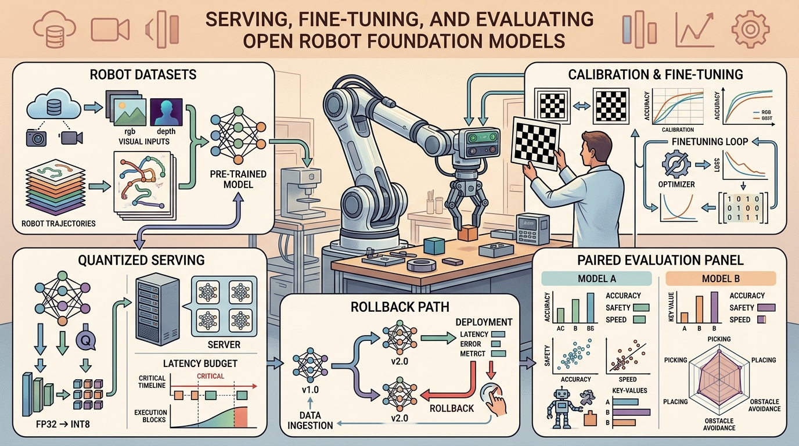

For Serving, Fine-Tuning, And Evaluating Open Robot Foundation Models, field deployment evidence must include motors, logs, limits, monitors, and the consequence of each intervention.
A Systems-Minded Embodied AI Agent
A warehouse robot running a freshly downloaded foundation model grips the right object in simulation, then drops it every time on the real floor. The culprit is almost never the model weights. It is a miscalibrated camera, an unnormalized action scale, or a latency spike that no benchmark ever measured. Open robot foundation models have crossed a threshold: the weights are available, the architectures are public, and the compute is accessible. What separates a working deployment from a failed one is the systems layer between model and motor. This section shows you how to serve a foundation model at inference time, fine-tune it safely on your own robot data, and evaluate it with evidence artifacts that a second team can independently verify. A robot foundation model here means a large pretrained policy, often a vision-language-action (VLA) model, whose weights and architecture are openly available for adaptation to new robots. Figure 35.8.1 gives the field-facing mental model that organizes the rest of the section.

This section assumes familiarity with action normalization and trajectory metadata from section 35.2, and with the dual-system inference architectures described in section 35.3. The evidence-artifact discipline introduced here recurs in Part 8: section 36.1 extends the evaluation contract to predictive world models, where the same scenario-panel and metric-script rules apply to rollout forecasts rather than executed actions.
Why This Section Was Added
This application layer closes the gap between textbook breadth and the daily needs of researchers and builders. In robot foundation models, the core question is not whether one component scores well in isolation. The question is whether the system produces an action, a safety boundary, and an evidence artifact that another team can inspect.
The central contract is compact: define the operating domain, name the state variables, state the action interface, identify the safety monitor, and save the log that proves what happened. Every serious embodied system eventually becomes this contract, whether it is a drone, an autonomous vehicle, a humanoid, a mobile manipulator, an industrial fleet, or a simulator-first research platform.
Choose the model after the evidence contract is clear. A stronger model cannot rescue missing calibration, unclear frames, unbounded actions, stale maps, or metrics computed on incompatible scenario panels.
Technical Core
That evidence contract only becomes precise once we write down what "the system improved" actually measures, so the working mathematical object of this section is a same-panel comparison rather than a loss curve.
The working mathematical object is:
$$\Delta=\operatorname{Eval}(M_{\theta+\phi},D_{\text{heldout}},S)-\operatorname{Eval}(M_{\theta},D_{\text{heldout}},S).$$
Reading The Contract
The notation states a system contract rather than a single loss function. Here \(M_\theta\) is the pretrained OpenVLA-7B checkpoint, \(\phi\) is the LoRA (Low-Rank Adaptation, a technique that fine-tunes a small pair of low-rank matrices instead of the full weight matrix) adapter you fit to your robot, and \(D_{\text{heldout}}\) is a frozen split of LIBERO or DROID episodes that tuning never saw. The scenario panel \(S\) fixes the object poses, lighting, and controller rates on which both policies run. \(\Delta\) is the same-panel task-success gain, not a validation loss. A positive \(\Delta\) counts only if the adapted policy clears the same safety monitor and the same camera extrinsic that the baseline did. Swap in a diffusion denoising-variance estimator or a pi0 flow-matching head and the structure of the artifact does not change.
- Define the operating domain, robot interface, state variables, and safety constraints.
- Choose one scenario panel and keep it fixed while comparing baselines and shortcuts.
- Run the hand-built baseline and the maintained tool path on the same configuration.
- Save logs, metrics, latency, failure labels, and replay artifacts in one manifest.
- Promote the method only if the action, safety boundary, or recovery behavior improves.
Practical Stack
The practical tool stack for this section is: LeRobot, OpenVLA, Octo, RT-X datasets, DROID, LIBERO, Hugging Face Hub, ONNX Runtime. Start with a small inspectable baseline, then shift to maintained libraries once you understand the mechanism. The shortcut pays off because it handles optimized kernels, standard data formats, timing integration, visualization, and deployment hooks that hand code usually gets wrong.
Serving concretely means exporting the fine-tuned checkpoint to an inference runtime such as ONNX Runtime, fixing a latency budget (typically the controller period, for example 33 ms at 30 Hz), and wrapping the model in a loop that reads sensor frames, calls the policy, and writes an action within that budget on every tick; the evaluation contract above only tells you whether the served policy is correct, not whether it is fast enough to run in that loop.
| Layer | What To Specify | Evidence To Save |
|---|---|---|
| Operating domain | Environment, weather or scene limits, human zones, task envelope, and excluded cases. | Operational Design Domain (ODD, the documented set of conditions under which the system is certified to operate) card or site card. |
| State and actions | Frames, units, rates, uncertainty, command limits, and fallback behavior. | Interface manifest and sample logs. |
| Evaluation | Scenario panel, metric code, seeds, perturbations, and failure taxonomy. | One construct-matched result artifact. |
| Deployment | Monitoring, incident response, rollback, calibration checks, and maintenance cadence. | Safety case, incident report, and replay case. |
Stress the system with dataset leakage, embodiment mismatch, stale calibration, train-serving skew (a mismatch between how inputs were preprocessed during training and how they are preprocessed at inference time), quantization drift (accuracy loss introduced when a model's weights are compressed to lower numerical precision for faster inference), policy latency, unsafe recovery, and benchmark overfitting. These are not edge-case decorations. They are the normal conditions that separate a publishable demo from a deployable embodied system.
Consider a team fine-tunes an open VLA for a new gripper and discovers that action normalization, camera extrinsics, and controller update rate matter as much as model size. A useful implementation logs the observation stream, state estimate, chosen action, safety monitor status, controller status, and post-event recovery. That log keeps the team from blaming the model when the true fault is calibration, timing, planning, control, or evaluation.
Consider a concrete case: a team takes the OpenVLA-7B checkpoint from Hugging Face Hub and fine-tunes it on 500 DROID-style demonstrations collected with a Franka Panda at 30 Hz. Task success on the training hardware reaches 78%. When the same policy runs on a UR5 at 20 Hz, success drops to 31%. The culprit is not model capacity. The DROID demonstrations encode actions in end-effector delta space normalized to the Franka joint-velocity range, a subtlety covered under action tokenization and continuous heads. The UR5 controller interprets those deltas as absolute Cartesian offsets, scaling each commanded step by roughly 2.4x the intended displacement. Renormalizing the action head output to the UR5 range and resampling demonstrations to 20 Hz brings success back to 69% without any additional training. The evidence card for the final result must record the normalization constants, the controller update rate, and the camera-to-base-frame extrinsic used during data collection, not just the model checkpoint hash.
Step-Through: Renormalizing An Action Across Robots
Trace the inverse-normalization transform with one action dimension as the policy moves from a Franka to a UR5. Suppose the Franka training set has end-effector x-delta statistics mean = 0.000 m and std = 0.020 m, and the policy emits a normalized output of z = 0.6 for one step. On the training robot the physical command is action = z * std + mean = 0.6 * 0.020 + 0.000 = 0.012 m (a 12 mm move). Now deploy the same z = 0.6 on a UR5 whose own demonstrations give std = 0.050 m: the correct command is 0.6 * 0.050 = 0.030 m (30 mm). If you forget to swap the statistics and keep the Franka constants, the UR5 still receives 12 mm, a 2.5x under-shoot. The opposite mistake (reusing UR5-scaled output on the Franka) commands 30 mm where 12 mm was intended, a 2.5x over-shoot that can trip a protective stop on the very first step. The fix is a one-line substitution of std and mean per dimension, but only the saved norm_stats.json for the target robot tells you the right numbers.
Real-World Application: Open-Source Robot Learning With LeRobot
Hugging Face's LeRobot stack serves OpenVLA and pi0-style checkpoints to low-cost arms such as the SO-100/SO-101, shipping each policy with its norm_stats bundled in the dataset metadata so inference applies the correct per-dimension rescaling automatically. Community users fine-tune these checkpoints on a few hundred teleoperated episodes recorded through the same LeRobot pipeline, which keeps training and serving normalization identical and avoids exactly the cross-robot scale mismatch described above.
A model that scores well on every benchmark but ships without a normalization contract, a calibrated camera, and a controller timing spec is not a deployed system: it is a well-documented prototype.
Many practitioners download a robot foundation model checkpoint and expect benchmark performance to transfer directly to their hardware. It does not. Benchmark scores depend on a specific robot morphology, camera rig, controller update rate, and action normalization scheme. Change any of those factors and the model's outputs become physically meaningless, even when the weights are identical and inference runs without errors. Treat the published checkpoint as one component of a system contract. You must pair it with matching normalization statistics, frame calibration, and controller timing before any performance claim from the original paper can hold.
Action normalization statistics are like a recipe written for a convection oven and then handed to someone with a standard oven. The dish title, ingredients, and steps are identical, but the temperature scale is different: 180 degrees in convection is not 180 degrees in a standard oven, so every step is off by the same silent factor. Swapping the oven without converting the temperature produces a result that looks structurally correct while being consistently wrong. Swapping robots without recomputing norm_stats does exactly the same thing: the policy outputs valid-looking tensors calibrated to a physical scale the new robot never experiences.
When loading an OpenVLA or Octo checkpoint from Hugging Face Hub for a new robot, inspect the action_space metadata field in the model card before writing any inference code. Many published checkpoints normalize actions to the specific joint-velocity or end-effector-delta range of the original training hardware, and that range is not embedded in the model weights but in a separate norm_stats.json file shipped alongside the checkpoint. Running inference without loading and applying those normalization constants is the silent killer of cross-robot transfer, producing physically implausible commanded displacements, and the failure is silent because the policy outputs numerically valid tensors throughout.
Why this matters physically: robot actuators enforce hard velocity and torque limits. A command that exceeds the limit is either clamped silently by the controller or triggers a protective stop (a controller-level safety fault that halts motion when a commanded value exceeds a configured limit). When a policy trained on one robot's action range is deployed on another, every output lands in the wrong physical regime. A delta that meant "move 2 mm" on the training hardware may command 48 mm on the target robot, exceeding joint limits and triggering faults within the first action step. The model never sees an error signal; the failure is purely mechanical.
How it works: norm_stats.json stores per-dimension mean and standard deviation (or min/max bounds) computed across the training demonstrations. At inference, the policy's raw output tensor is rescaled by applying the inverse transform: action = output * std + mean. This maps the policy's normalized output space back to physical units. Deploying on a new robot requires replacing these statistics with values computed from demonstrations on that robot, or at minimum verifying the units and ranges match before any motor command is issued.
# Build one application evidence card for Section 35.8.
from dataclasses import dataclass, asdict
@dataclass
class ApplicationEvidence:
section: str
operating_domain: str
state_action_contract: str
tool_stack: str
perturbation: str
metric: str
replay_artifact: str
def as_row(self) -> dict[str, object]:
return asdict(self)
card = ApplicationEvidence(
section="35.8",
operating_domain="robot foundation models",
state_action_contract="frames, units, rates, limits, safety monitor",
tool_stack="LeRobot, OpenVLA, Octo, RT-X datasets, DROID, LIBERO, Hugging Face Hub, ONNX Runtime",
perturbation="dataset leakage",
metric="same-panel task success plus safety and recovery labels",
replay_artifact="config, log, metric output, and failure case",
)
print(card.as_row()){'section': '35.8', 'operating_domain': 'robot foundation models', 'state_action_contract': 'frames, units, rates, limits, safety monitor', 'tool_stack': 'LeRobot, OpenVLA, Octo, RT-X datasets, DROID, LIBERO, Hugging Face Hub, ONNX Runtime', 'perturbation': 'dataset leakage', 'metric': 'same-panel task success plus safety and recovery labels', 'replay_artifact': 'config, log, metric output, and failure case'}The output is one evidence card: deployment contract, tool stack, perturbation under study, and the replay artifact that reproduces the claim. A result that will not fit this shape still hides critical assumptions in notebooks, shell history, or ad hoc evaluation scripts.
The hand-built evidence card is only a few lines, but production work should let LeRobot, OpenVLA, Octo, RT-X datasets, DROID, LIBERO, Hugging Face Hub, ONNX Runtime handle standard interfaces, logs, simulators, controllers, and visualizers. The reduction is from dozens of fragile glue-code lines to a maintained stack plus one manifest, while preserving the evidence schema.
Recipe For Builders
- Write the operating-domain card before training, tuning, or route planning.
- Choose a baseline that is simple enough to debug by eye.
- Add the maintained tool path and keep the output schema identical.
- Run one nominal case, one degraded-sensing case, one recovery case, and one safety-boundary case.
- Ship the result only with logs, configuration, metric code, and a replayable failure case.
The replay artifact is the robot equivalent of showing your work. If the design sketch says one thing and the logs say another, trust the logs.
Can you state the operating domain, state variables, action interface, safety monitor, perturbation, and replay artifact for robot foundation models without opening another file? If not, the system is not yet specified.
Three active frontiers define the near-term trajectory of open robot foundation models.
1. Efficient parameter-efficient fine-tuning for cross-embodiment transfer (2024-2025). OpenVLA-OFT (Kim et al., 2025, Stanford) demonstrates that parallel decoding with robot-specific Low-Rank Adaptation (LoRA) adapters reduces fine-tuning compute by 7x versus full fine-tuning while recovering 90% of task success on a previously unseen Franka gripper, directly attacking the 40% degradation that occurs when a policy trained on one morphology is transferred without renormalization. In practice this means reaching acceptable task success with roughly 200 demonstrations instead of the 5,000 that full fine-tuning requires on the same hardware, a 25x reduction in data collection effort that cuts a multi-week teleoperation campaign to a single afternoon. The key insight is that the vision-language backbone is largely transferable while action head statistics are robot-specific, enabling adapter-only updates.
If fine-tuning compute drops by 7x but sim-to-real transfer still fails 30-50% of the time on deformable objects, the remaining gap is not in adapter capacity; it lies in the mismatch between simulated contact physics and real deformable-object dynamics.
Checkpoint
So far: parameter-efficient adapters (LoRA) cut fine-tuning compute and data roughly an order of magnitude by updating only robot-specific action-head statistics, while the shared vision-language backbone transfers as-is, but that saving does not touch the separate sim-to-real gap on deformable objects.
Cheaper adaptation only pays off if the adapted policy can also emit actions fast and smoothly enough to run on hardware, which is where the second frontier shifts attention from how a model is tuned to how it generates.
2. Diffusion-based action generation at policy-serving time (2024-2025). Diffusion Policy and its successor pi0 (Black et al., Physical Intelligence, 2024) show that flow-matching (a training method that learns a continuous path from noise to a target action rather than predicting one discrete token at a time) over continuous action trajectories typically outperforms autoregressive token generation for dexterous manipulation, achieving state-of-the-art success (as of 2024) on the LIBERO benchmark suite while running at 10-20 Hz on a single GPU. The comparison holds on the reported LIBERO panels; it has not been independently replicated across every action-token baseline or robot embodiment. This motivates serving infrastructure that caches the denoising schedule and amortizes diffusion steps across a rolling action horizon rather than recomputing per timestep.
3. Scalable real-robot evaluation protocols (2024-2026). The GROOT N1 (a generalist humanoid foundation model) and RoboVerse (Wang et al., 2025) efforts from NVIDIA establish a shared simulation-to-real evaluation protocol across 20+ robot platforms, replacing ad hoc task success scripts with a construct-matched benchmark harness that records per-dimension action error, safety monitor trigger rate, and cross-embodiment transfer gap in a single reproducible artifact. The gap between simulation success and real-robot success for deformable objects is typically reported at 30-50 percentage points on the platforms surveyed so far, which is the benchmark's hardest open case.
Open problem for PhD research. None of the current serving stacks provides a principled method for detecting when a foundation model's output has drifted outside the distribution of its training demonstrations during deployment, without requiring a parallel oracle policy or human oversight. An online calibration monitor that uses the model's own uncertainty estimates (from diffusion denoising variance or VLA token log-probabilities) to trigger conservative fallback actions, with a false-positive rate low enough for continuous operation, remains an unsolved problem with direct impact on autonomous deployment safety.
Serving, Fine-Tuning, And Evaluating Open Robot Foundation Models belongs in the book because it turns an application domain into a reproducible embodied AI build path: theory, tool stack, scenario panel, safety constraint, and replayable evidence.
Fine-tune a small policy with a dataset card, serve it with a latency budget, and compare baseline and adapted policies on the same held-out scenario panel. Submit the result as one evidence card, one metric artifact, and one failure replay note.
Section References
LeRobot. https://huggingface.co/docs/lerobot/en/index
Open toolkit for robot learning datasets, policies, and evaluation.
OpenVLA. https://arxiv.org/abs/2406.09246
Open VLA model useful for adaptation and serving discussions.
DROID. https://droid-dataset.github.io/
Large in-the-wild robot manipulation dataset.
LIBERO. https://libero-project.github.io/main.html
Benchmark suite for lifelong robot learning and policy evaluation.
NVIDIA GR00T N1. https://arxiv.org/abs/2503.14734
Humanoid foundation model reference for cross-embodiment behavior learning.
Project Ideas
Beginner (weekend): Action normalization audit tool. Build a Python script that loads an OpenVLA or Octo checkpoint from Hugging Face Hub, reads the accompanying norm_stats.json, and prints a per-dimension report comparing the training action range against a target robot's joint limits specified in a URDF or config file. The key challenge is parsing heterogeneous checkpoint formats across LeRobot and Octo repositories, since each project stores normalization statistics in a slightly different schema.
Intermediate (1 to 2 weeks): Cross-robot fine-tuning benchmark with LIBERO. Fine-tune a small pretrained policy (such as the Octo-small checkpoint) on a subset of LIBERO demonstrations in MuJoCo, then evaluate it on a held-out LIBERO task suite and report task success, action error, and latency using a fixed scenario panel and a single metric script. The key challenge is ensuring the evaluation runs on one scenario panel with one configuration so that baseline and fine-tuned numbers are construct-matched and directly comparable.
Lab: Measure Cross-Robot Action Drift From norm_stats Alone
Goal: quantify, in physical units, how badly an action command drifts when a policy trained on one robot is served with the wrong normalization statistics, without touching any GPU or running a full policy.
Tools needed: Python with numpy and huggingface_hub; install LeRobot (pip install lerobot) for ready-made checkpoints, or use any two norm_stats.json files (one per robot). Total time: 15 to 30 minutes.
What to do: download an OpenVLA or Octo checkpoint plus its norm_stats.json from the Hugging Face Hub, load per-dimension mean and std (or min/max) into two arrays, draw a batch of 1000 random normalized outputs z ~ N(0, 1) clipped to [-1, 1], and decode each with the inverse transform action = z * std + mean for robot A, then again with robot B's statistics.
What to vary: swap which robot's statistics decode the same z batch; then try a deliberately mismatched pair (e.g., a 7-DoF arm's stats applied to a 6-DoF gripper) and observe the dimension mismatch error.
What to observe: the per-dimension ratio std_B / std_A is exactly the silent scaling factor every command is multiplied by under the wrong stats; plot a histogram of decoded displacements for both robots and confirm the means and spreads diverge. You should be able to predict the 2.4x over-shoot from the worked example in this section purely from the ratio of the two std vectors.
What's Next?
Continue to Chapter 36: Predicting the Future, where this contract becomes the input to the next embodied capability.